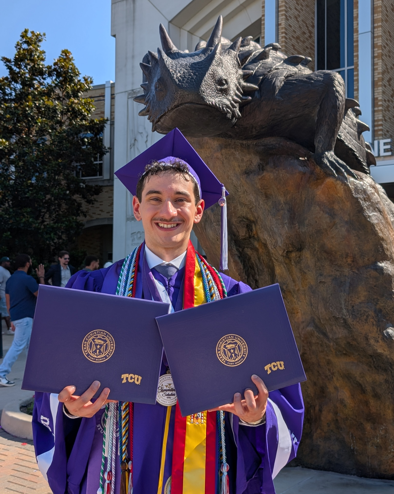

This frog has graduated! This past Saturday I earned the two degrees I have been working towards over the past four years at Texas Christian University. I am now the proud recipient of a Bachelor of Arts in History and a Bachelor of Science in Geography.

These past four years at TCU have taught me so much in and out of the classroom. I began only as a history major and over time saw the career and practical applications that my interest in geography and cartography could have, and so added it on as a second degree. I chose the science route for this degree as it pushed me to implement the more technical sides of Geography, learning GIS, data analysis, Python, cartography, and a host of other skills taught to me in classes and in internship opportunities I got within the department.

.jpeg)
In my time I have worked on numerous projects, some larger than others. The standouts were a few papers, many maps, and some interactive coded dashboards which I host on my site: projects.
TCU has entirely reshaped me and my outlook, from the many friendships I have made to the professional experience and connections I have crafted. I was particularly grateful to have such amazing academic departments to lean on and learn from. Claire Sanders helped me get through freshman year and taught me how to sharpen my mind. Sean Crotty saw the making of a GIS Analyst in me and gave me the opportunity to build some amazing research projects with him over the past year and a half.
Looking into the future, I am excited to bring the skills I have spent the last few years building and refining into the geospatial and data analysis field.